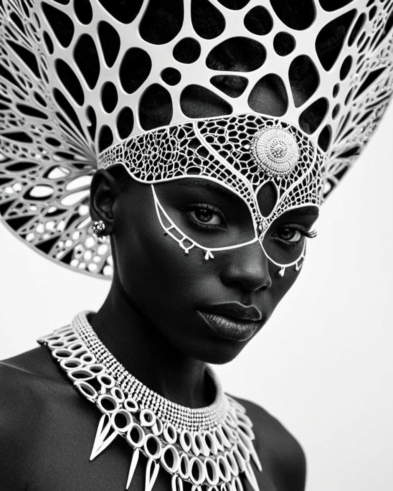

本作業旨在引導學員掌握 SDXL 大模型生成特性、LoRA（Low-Rank Adaptation）微調權重調控，以及在 Fooocus 中精準復刻提示詞與進行多模態創意延伸的完整工作流：
Voronoi 圖（泰森多邊形）是計算幾何學中的基礎劃分算法：給定平面上一組離散種子點，將平面劃分成數個凸多邊形，使各多邊形內部任一點到該區種子點的距離均小於到其他種子點的距離。此幾何結構常見於大自然，如長頸鹿斑塊紋理、植物葉脈輸送通道、蜻蜓翅膀翼脈等。
在神經網路與擴散模型層面，vrn.safetensors 是基於 SDXL 架構訓練的專用 LoRA。它將提示詞中的觸發詞（vrn、voronoi complex pattern、intricate cell networks）映射至模型 Cross-Attention 交叉注意力層與卷積特徵層，強迫模型在物體輪廓與表面生成細密且立體的多邊形網格紋理。
本作業採用的 juggernautXL_ragnarok.safetensors 是 SDXL 1.0 的頂級 Checkpoint，具備以下優勢：
camera angle front）解析極為敏銳。weight: 0.8 的重度幾何風格介入下，依然能生成輪廓鮮明、眼神銳利的戰士面容。civitai_298448.safetensors，提示詞該怎麼寫？
.safetensors 檔名只改變作業系統與軟體辨識的檔名，絕不會改變模型內部訓練好的觸發詞（Trigger Words）！此 LoRA 的專屬觸發詞依然是 vrn、voronoi complex pattern 與 intricate cell networks。<lora:civitai_298448:0.8>（Fooocus 不支援此語法）。請將檔案放在 models/loras/，在 Fooocus 的 Models 標籤頁 下拉選單選擇 civitai_298448.safetensors，Weight 設為 0.8。提示詞只需照常填寫 vrn, voronoi complex pattern... 即可！<lora:civitai_298448:0.8>, vrn, voronoi complex pattern...。答案是：「不一定」！這取決於該 LoRA 訓練時的「打標（Captioning）策略」與設計目標：
| LoRA 類型 | 典型代表範例 | 底層訓練策略 | 是否必須觸發詞？ | 未填寫觸發詞之實際表現 |
|---|---|---|---|---|
| 特定概念 / 主體綁定型 | 本課之 vrn (Voronoi)、特定角色、名人臉孔、專屬產品 |
訓練資料集強制綁定特定罕見 Token（如 vrn） |
必須有觸發詞 | 權重雖然載入，但神經網路注意力未被激活，畫面幾乎看不出效果 |
| 全域畫質 / 光影風格型 | Detail Tweaker (細節增強)、Film Grain (底片顆粒)、Add More Detail | 空標籤（No Captions）訓練，直接微調底模常態分佈 | 免觸發詞 | 掛載即生效！只要在 UI 中設定權重，全圖自動套用效果 |
| 混合泛用風格型 | 水彩 (Watercolor)、油畫筆觸、賽博龐克色系 | 混合自然語言長句打標 | 建議填寫相關詞 | 未寫時有微弱色調偏移，但加入關鍵字後風格特徵才會完全顯現 |
Trained Words。若欄位列有單詞（如 vrn），代表必須寫入；若為空或作者於簡介註明 "No trigger word needed"，則代表只需掛載即可全域生效。
| 功能項目 | 標準 SD WebUI / ComfyUI | Fooocus 實作機制 | 課堂操作關鍵 |
|---|---|---|---|
| LoRA 載入語法 | 在 Prompt 填入 <lora:vrn:0.8> |
在 Models 標籤頁 的 LoRA 滑桿直接選擇與調整 | Prompt 中勿留 <lora:...>，僅保留觸發詞 vrn |
| 預設風格（Styles） | 手動載入 Negative Embeddings | 預設自動勾選 Fooocus V2 與 Masterpiece | 黑白極簡幾何建議取消勾選 Fooocus V2，避免畫面被過度平滑 |
| Guidance (CFG) | 通常預設為 7.0 | SDXL 推薦 3.5 ~ 5.5 | 本作業原圖使用 CFG = 5.0，可維持幾何網格邊緣的高清晰度 |
| 原生解析度 | 手動設定 512x640 + Hires. Fix | Setting 內建 SDXL 最佳比例選單 | 直接選取 1024×1280 (4:5) |

{
"seed": 232816640,
"Model": "juggernautXL_ragnarok",
"Model_hash": "dd08fa32f9",
"steps": 20,
"sampler": "DPM++ 2M SDE",
"Schedule type": "Karras",
"cfgScale": 5,
"width": 512,
"height": 640,
"Hires upscale": "2 (Latent, Denoise 0.7) -> 1024x1280",
"prompt": "breathtaking \"vrn, voronoi complex pattern, portrait of an African warrior with a headdress, skin and ornaments rendered in intricate cell networks, black and white, camera angle front.\" , . award-winning, professional, highly detailed",
"negativePrompt": "fat, obese, overweight, chubby, pudgy, bbw, plus size, Watermark, Text, censored, deformed, bad anatomy, disfigured, poorly drawn face, mutated, extra limb, ugly, poorly drawn hands, missing limb, floating limbs, disconnected limbs, disconnected head, malformed hands, long neck, mutated hands and fingers, bad hands, missing fingers, cropped, worst quality, low quality, mutation, poorly drawn, huge calf, bad hands, fused hand, missing hand, disappearing arms, disappearing thigh, disappearing calf, disappearing legs, missing fingers, fused fingers, abnormal eye proportion, Abnormal hands, abnormal legs, abnormal feet, abnormal fingers, sitting, seated, kneeling, crouching, lying down, muscular, bodybuilder, bulky muscles, masculine muscles, ugly, deformed, noisy, blurry, distorted, grainy",
"resources": [
{ "name": "juggernautXL_ragnarok", "type": "model", "hash": "dd08fa32f9" },
{ "name": "vrn", "type": "lora", "weight": 0.8, "hash": "87a25679e04f" }
]
} #!/bin/bash
# ==============================================================================
# Fooocus 課堂作業：Juggernaut XL 與 Voronoi LoRA 快速佈署腳本
# ==============================================================================
FOOOCUS_ROOT="./Fooocus"
CHECKPOINT_DIR="${FOOOCUS_ROOT}/models/checkpoints"
LORA_DIR="${FOOOCUS_ROOT}/models/loras"
mkdir -p "${CHECKPOINT_DIR}"
mkdir -p "${LORA_DIR}"
echo "[INFO] 下載 Juggernaut XL (Ragnarok)..."
wget -c --timeout=600 \
"https://civitai.com/api/download/models/1759168?fileId=1659952" \
-O "${CHECKPOINT_DIR}/juggernautXL_ragnarok.safetensors"
echo "[INFO] 下載 Voronoi SDXL LoRA..."
wget -c --timeout=300 \
"https://civitai.com/api/download/models/3409217?fileId=3301060" \
-O "${LORA_DIR}/vrn.safetensors"
echo "[SUCCESS] 模型下載完畢，請重新啟動或重整 Fooocus WebUI！"[x] Advanced 進階設定。Speed，Aspect Ratio 選擇 1024×1280 (4:5)。juggernautXL_ragnarok.safetensors，LoRA 1 選擇 vrn.safetensors 並將 Weight 設為 0.8。其餘 LoRA 設為 None。Fooocus V2，可勾選 Fooocus Semi Realistic 或清空所有 Style。breathtaking "vrn, voronoi complex pattern, portrait of an African warrior with a headdress, skin and ornaments rendered in intricate cell networks, black and white, camera angle front.", award-winning, professional, highly detailedfat, obese, overweight, chubby, pudgy, bbw, plus size, Watermark, Text, censored, deformed, bad anatomy, disfigured, poorly drawn face, mutated, extra limb, ugly, poorly drawn hands, missing limb, floating limbs, disconnected limbs, disconnected head, malformed hands, long neck, mutated hands and fingers, bad hands, missing fingers, cropped, worst quality, low quality, mutation, poorly drawn, huge calf, bad hands, fused hand, missing hand, disappearing arms, disappearing thigh, disappearing calf, disappearing legs, missing fingers, fused fingers, abnormal eye proportion, Abnormal hands, abnormal legs, abnormal feet, abnormal fingers, sitting, seated, kneeling, crouching, lying down, muscular, bodybuilder, bulky muscles, masculine muscles, ugly, deformed, noisy, blurry, distorted, grainy232816640，Guidance Scale 設為 5.0。點擊「Generate」產出基準作業。概念說明：將黑白肖像重構為未來賽博格，讓細胞多邊形轉化為微發光陶瓷面板與光纖電路，具備金屬與藍琥珀色高光對比。
breathtaking "vrn, voronoi complex pattern, portrait of a female cyborg android, translucent skin and cybernetic ornaments rendered in intricate glowing cell networks, neon blue and amber fiber optics pulsing under ceramic plates, cinematic lighting, sharp focus, 8k masterpiece."建議參數：LoRA Weight 0.85，Style 勾選 Fooocus Sharp。
概念說明：延伸主體至動物與大自然，將狼皮毛、獠牙與夜空背景以幾何星雲網格重現（對應 Civitai 示範作品二）。
breathtaking "vrn, voronoi complex pattern, a magnificent spirit wolf howling at a glowing crescent moon, body and fur formed by layered cell networks, deep night sky background with glittering nebula, side profile view, mystic aura, epic scale."建議參數：LoRA Weight 0.75，Aspect Ratio 1280×1024 (橫幅)。
概念說明：打破單色黑白限制，將細胞多邊形賦予飽和的彩色琉璃質地，模擬早晨陽光穿透教堂花窗的立體光芒。
masterpiece "vrn, voronoi complex pattern, majestic portrait of a guardian angel with grand wings, face and feather wings rendered in vibrant stained glass cell networks, brilliant morning sunlight beaming through translucent colorful crystal polygons, dramatic volumetric rays, high contrast, black lead lines."建議參數：LoRA Weight 0.9，負向詞加入 monochrome, dull colors。
概念說明：融合古典希臘羅馬大理石雕刻與日本傳統「金繼（Kintsugi）」美學，幾何細胞接縫流淌著液態純金。
stunning studio photograph, "vrn, voronoi complex pattern, classical marble bust of a Greek philosopher, facial surface divided into geometric cell networks joined by molten liquid gold kintsugi seams, elegant black velvet museum background, dramatic rim lighting, tactile stone texture."建議參數：LoRA Weight 0.7，CFG 4.5。
概念說明：利用 Fooocus 內建的對比度結構保持（CPDS）演算法，直接將學員的大頭照轉換成 Voronoi 藝術肖像！
[x] Input Image 並切換至 Image Prompt 標籤。Advanced，切換至 CPDS 模式（或 ImagePrompt）。Stop At: 0.85、Weight: 0.6。"vrn, voronoi complex pattern, person rendered in intricate geometric cell networks, black and white portrait, dramatic contrast, studio lighting"概念說明：將水滴飛沫凝聚為晶瑩剔透的多邊形細胞水翼，展示同時掛載風格 LoRA（vrn）與全域畫質增強 LoRA（WildcardX-XL-Detail-Enhancer）的高階堆疊技術。
Fooocus 雙 LoRA 欄位配置：
vrn.safetensors（權重 0.65，負責多邊形細胞幾何分區）WildcardX-XL-Detail-Enhancer.safetensors（權重 0.7，負責極致細水滴飛沫與光澤）high quality, highly detailed, 8K Ultra HD, "vrn, voronoi complex pattern, a magical butterfly made of water spray, delicate wings formed by translucent geometric cell networks and crystalline aquatic droplets", In this enchanting artwork, the very essence of water transforms into ethereal butterflies, each droplet gracefully adorning the wings of a butterfly in flight, The translucence of the water captures the delicate beauty of the butterfly, as if nature has granted fleeting wings to the liquid essence, The intricate patterns formed by these aquatic butterflies evoke a sense of enchantment, their ephemeral forms suspended in time, The play of light on their wings adds a touch of magic, turning ordinary droplets into a symphony of aquatic butterflies, dancing in the realm where water meets whimsical flight, by yukisakura, awesome full color, sharp focus, volumetric lighting建議負向詞：solid opaque wings, plastic, muddy water, deformed butterfly, extra wings, blurry droplets, low quality, worst quality, watermark, text
模型/Agent: Gemini 3.8 Flash / Antigravity
Prompt 原文:
今天影像生成的課程，用fooocus指定生成一張作業，使用的圖片是 https://civitai.com/images/145848150 根據這個圖片的生成資料，下載了模型與lora，可以在fooocus生成的時候模仿與變化， https://civitai.com/models/133005/juggernaut-xl?modelVersionId=1759168 https://civitai.com/models/3004897/voronoi?modelVersionId=3409217 這是模型與lora變更摘要: 建立完整 Fooocus 課堂作業指引 HTML 講義，提供 PDF 匯出、Mermaid 流程圖、Civitai 145848150 原圖解析、下載部署腳本與五大創意延伸模板。
模型/Agent: Gemini 3.8 Flash / Antigravity
Prompt 原文:
如果我把下載的lora 命名為civitai_298448.safetensors 在提示詞中應該如何使用變更摘要: 補充 LoRA 檔案重命名為 civitai_298448.safetensors 後，在 Fooocus UI 下拉選單配置 vs 觸發詞保持不變的觀念解析與 WebUI 語法對照。
模型/Agent: Gemini 3.8 Flash / Antigravity
Prompt 原文:
所以lora必須有觸發詞?才能啟用變更摘要: 深入剖析 LoRA 觸發詞底層機制，比較「主體概念綁定型（需觸發詞）」與「全域畫質/光影風格型（免觸發詞，掛載即生效）」之差異與判斷原則。
模型/Agent: Gemini 3.8 Flash / Antigravity
Prompt 原文:
high quality, highly detailed, 8K Ultra HD, butterfly made of water spray, In this enchanting artwork, the very essence of water transforms into ethereal butterflies, each droplet gracefully adorning the wings of a butterfly in flight, The translucence of the water captures the delicate beauty of the butterfly, as if nature has granted fleeting wings to the liquid essence, The intricate patterns formed by these aquatic butterflies evoke a sense of enchantment, their ephemeral forms suspended in time, The play of light on their wings adds a touch of magic, turning ordinary droplets into a symphony of aquatic butterflies, dancing in the realm where water meets whimsical flight, by yukisakura, awesome full color, 變更摘要: 示範外部提示詞導入 Fooocus 之語法清洗（移除末尾 <lora:...> 轉入 UI 欄位），並結合 Voronoi LoRA 提出雙 LoRA「水花飛濺幾何細胞水蝶（變化方向 F）」之實戰融合方案。